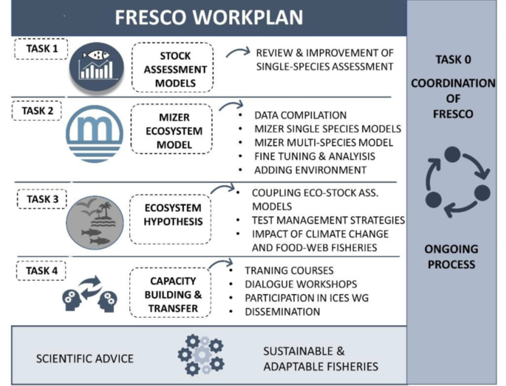
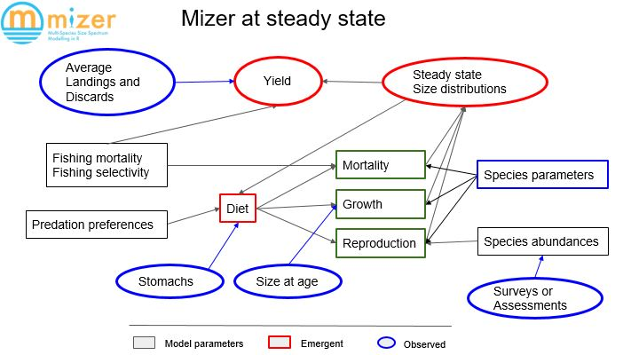

WORK PLAN
MAIN TASK
The four main objectives of FRESCO will be achieved by four main tasks: (1) develop and improves single stock assessment models;
(2) develop an ecosystem size spectra (MIZER) model;
(3) evaluate the ecosystem impact of management decisions based on current single stock assessment using the predictive ability of the models developed
and (4) knowledge transfer and outreach task.
The complete workplan is presented in Figure 2.

Figure 2: Workplan of FRESCO with the main Tasks and subtasks that will be developed during the project.
In particular each task will be developed as:
-
Task 0. Coordination of the project.
-
Task 1: Develop and improve single stock assessment models.
-
Task 2: Develop and test an ecosystem size spectra (MIZER) model (figure 3).
-
Task 3: Evaluate the ecosystem impact of management decisions based on current single stock assessment using the predictive ability of the models developed.
-
Task 4: Capacity building and transfer of knowledge.
To ensure the coordination of activities in the project, a kick-off meeting, a mid-term meeting and a final meeting will be held with the participation of all team members. An online platform will be created that will serve to coordinate and conduct meetings and share documents and data. In addition, we will hold frequent online meetings, telephone and email contacts with team members.
The selected stocks for this proposal are evaluated using different stock assessment models that require different input parameters and datasets. The stock assessment models that will be used will be the ones routinely performed in the respective expert groups for each of the selected species. These models range from basic data-limited methods as the LBI that only use length frequency distribution and life history parameters, medium-limited methods as the production models like the SPiCT that use times series of catches and biomass indices to rich models as catch-at-age model a4a and SS that allows great flexibility in its configuration: temporal resolution (year, quarter, etc.), spatial resolution (single region or several regions), number of fishing fleets, single sex or distinguishing between males and females, description of biological processes (growth, maturity, fertility, hermaphroditism, natural mortality, recruitment, movement between regions), and the influence of certain variables (for example, with the environment) in some processes.
Task 1 further develops single stock assessment models for demersal species considering uncertainty. Single stock assessment models are used to provide scientific advice from ICES to managers (e.g. European Commision that sets yearly TACs). This is based on a “best model approach” that consists of choosing the “best” model among different feasible alternatives. However, if we like to have uncertainty in consideration, we need to extend this approach considering these alternatives as potentially valid ones. With these best models, as a starting point,
Task 1 will identify potential flaws of current models and develop feasible alternatives considering life history (natural mortality, individual growth, sex ratio, etc) and fishing activities (e.g. selectivity, i.e. the fleet ability to catch different length classes). Ecosystem models (Mizer) require inputs from single stock models such as life history parameters or selectivity. Results of this task will increase the quality of the scientific advice of these species especially for the data-limited ones. Furthermore, having alternative models for single stocks allows us to explore uncertainty in the single stock advice and also translate this uncertainty to the Mizer model to identify sensitive parameters having strong impact on ecosystem indicators.

Figure 3: Workflow of the MIZER model.
One ecosystem model that is starting to be widely used is Mizer (multi-species size spectrum modelling in R)33, a dynamic multi-species size-spectrum model which captures the interactions between multiple species. One big advantage of a Mizer model is that it is based on a strong mathematical foundation. This allows a degree of a priori understanding of the behavior of the model that is absent in many other multi-species models. In addition, it is developed as an R package which allows users to easily access it and replicate models.
Setting up a new Mizer model is a two-step process: first one calibrates the model to describe a steady state that agrees with current observations, then one chooses the additional parameters that determine the dynamics away from the steady state. This model can then be used to investigate future effects of changes in fishing policy or of environmental stressors. In Task 2 a Mizer model for the Northeast Atlantic waters will be calibrated using abundance data of the entire demersal communities of the study area.
Subtask 2.1 Data compilation and exploratory data analysis. The main goal of this task is to ensure that all available information is ready to develop the Mizer models and an exploratory data analysis identifying main features of these data. Mizer development requires different types of data, which includes length distribution and abundance trends of the whole demersal community and, for selected species, additional data related with life history (growth, natural mortality, maturity, length-weight relationship, etc), predator-prey relationships (prey suitability, prey preference, metabolic rate, assimilation, evacuation rate, etc), and fishing information (gear types, selection type, catchability, etc).
In particular, length distribution and abundance data will be retrieved from the DATRAS (the Database of Trawl Surveys) online database (https://www.ices.dk/data/data-portals/Pages/DATRAS.aspx). DATRAS stores data collected from trawl scientific surveys (SP-NSGFSQ4 and PT-GFS-WIBTS-Q4) performed by the IEO-CSIC and the Instituto Português do Mar e da Atmosfera (IPMA) each autumn (September and October) since the 90’s. In addition, in order to set trophic interactions, data of stomach contents of the main species will be used. This extensive dataset was collected during the same scientific surveys so will be perfectly matched in time and space. All the fishing information will be provided by the IEO-CSIC and IPMA and are routinely used in the stock assessment models. Finally, environmental data (sea surface and bottom temperature, salinity, Chl-a, etc) that will be needed in the successive tasks, will be retrieved from the EU Copernicus open-access database (https://www.copernicus.eu).
Subtask 2.2 Development of single species Mizer model. The goal of this sub-task is to develop single stock size spectra models for a selected group of species that have different availability of data: data limited such as sole, data moderated such as Nephrops and data rich such as hake, four-spot megrim or monkfish which are currently evaluated in ICES. The basis behind single species size spectra models is that fish density in a size class increases if the rate at which fish grow into the size class is larger than the rate at which they either grow out of the size class or die while they are in the size class. Thus size-spectrum dynamics is the result of the interplay between the death rate and the changes in the growth rate. Thus fishing, which affects the death rates, alters the size spectra. These models will be compared with the assessment models developed in Task 1 to check the ability of size spectra to catch the impact of the fishing activity. For data limited stocks, Mizer will also be evaluated as an alternative tool to provide advice.
Subtask 2.3 Development of multispecies Mizer model. The goal of this sub-task is to develop a basic size spectra model for the whole ecosystem. In the multispecies model each species will have different life-history parameters; there may be multiple gear types with different selectivities targeting different groups of species; the fishing effort of each gear may change with time instead of just being constant (which has been the case in the simulations we have looked at so far); the interactions between the species through predator-prey relationship also needs to be considered. This will allow us to test specific species management rules (in Task 3) and to compare species-specific metrics, such as yield, to reference levels, taking in consideration that these species are caught in a mixed fishery.
Subtask 2.4 Fine tuning and sensitivity analysis of Mizer models. The goal of this subtask is to check the model's robustness to uncertainty in model parameters to better understand the ability of the model to address ecosystem and management issues. The size-spectrum dynamics in a multi-species ecosystem is extremely complex. We can understand very simplified cases analytically, but in general we need to use numerical simulation to understand the consequences of various interventions. Single species' main source of uncertainty should have been identified in Task 1, additional sources of uncertainty would have been identified in subtask 2.1. Once the main sources of uncertainty have been selected the model will be tested and their impact on size spectra and ecosystem indicators under fishing exploitation will be evaluated. The final product of this subtask will be a model (or models) ready to be used in fishery management simulations with weakness and strengths well identified.
Subtask 2.5 Adding environmental drivers. The goal of this subtask is to explore and define environmental interactions that can be considered in the ecosystem and fishery advice process. A Mizer model is a good tool for studying the effect of environmental changes, like climate change, because it is a mechanistic model that can deduce the complex population-level changes that one is interested in from the simpler changes in the physiological rates and feeding interactions of individual fish species. However, it requires to set a link (or hypothesis) between the environment and the process driving the population or ecosystem dynamic that will be tested in this subtask with the different species (e.g., increase or decrease in abundance or life history parameters as growth depending on the temperature, salinity or Chl-a concentration). The hypothesis will be based on bibliographic studies (i.e., for example damages in Nephrops have been reported with reduced salinity and acidification) and finally the selected environmental variables will be used then in the successive tasks (task 3) as predictors in the climate change scenarios.
This task will be the core work of the project as it will develop an operational modelling approach to link single species stock assessment models with the ecosystem Mizer models.
Two methodological paths will be explored, compared and combined:
(1) The use of outputs from the stock assessments models as inputs to calibrate the Mizer model. In this approach species biomass, the size distribution of biomasses, fishing mortality, and catch and fishing effort time series will be retrieved from the assessment models to calibrate, validate and assess the Mizer model. In this approach, the Mizer model will be parameterized with the species biomass and its size distribution calculated by the stock assessments. Furthermore, estimated reference points (RP, e.g., FMSY/BMSY and Flim/Blim) will be used to simulate the effects of management strategies on the food web. This approach will help to better understand the impacts of managing ecosystems with single-species RPs under climate change scenarios (see Task 3.2) and will allow adjusting the RPs to maintain the ecosystem integrity.
(2) Current fisheries management is based mainly (not only) on single stock decisions which includes Total Allowed Catches (TACs) and technical measures. A step forward towards EBFM can be given by evaluating the impact of these management measures on the ecosystem. This can easily be performed in the Mizer ecosystem model since the main species for which TACs are set are parametrized independently including life history and exploitation (e.g. selectivity). Ecosystem indicators, such as changes in size spectra, will be used to evaluate the ecosystem impact of these measures.
Subtask 3.1. Select and test management strategies for the selected stocks and areas. The goal of this task is to identify and test alternative management measures to be implemented for single stocks and for the whole ecosystem. Candidate management strategies will be determined depending on the selected stocks and different scenarios will be performed. The Mizer model will be used as the operating model to be tested: a) Temporal closures; b) Reduction in effort; c) Different TACs; d) Landing obligation, and e) Selectivity measures.
Model projections will be developed at two levels: (1) at single stock level Mizer models will be protected forwards comparing the results for data-rich, data-moderate and data-limited models. This analysis would allow us to explore to what extent Mizer can be used as an assessment tool for data limited stocks and (2) single stock management decisions have ecosystem impact, current management measures (TACs and technical ones) will be implemented in the ecosystem model and the ecosystem impact will be evaluated, first by changes in size spectra and furthermore developing additional ecosystem indicators such as mean trophic level, mean size, maximum life span, proportion of predators.
Subtask 3.2 Impact of climate change on food webs and fisheries. Once the more appropriate candidate management strategies have been tested in Task 3.1 using the modeling approach, the effects of climate change will be introduced to test the sensibility of these measures to future shifts. Climate change scenarios will be developed using available climate projections from regional and global climate models through established collaborations with the international initiative FishMIP The Fisheries and Marine Ecosystem Model Intercomparison Project. New biomass estimates obtained from simulating different climate change scenarios using the Mizer model will be used as input values for the stock assessment models. By running the stock assessment models with these short (5 years), medium (10 years), and long-term (> 20 years) new biomass estimates, adjusted RPs will be calculated that account for climate change effects and trophic interactions. Mizer will then again be used to evaluate the effect of the adjusted RPs on the entire food web. This process considers the complex trade-offs between different fisheries and the need for ecosystem integrity to maintain all target stock biomass at mandated levels and ensure the long-term provision of other ecosystem functions.
This task will be dedicated to the different aspects of capacity building and transfer of knowledge to create societal value with FRESCO. This will be achieved by organising training courses and workshops with stakeholders (both from the public and the private sectors), dialogues about key topics of the project and participation in international fisheries assessment meetings.
Subtask 4.1: Training courses for stakeholders. Stock assessment single species courses will be organized to teach the most-used stock assessment models to users such as experts that routinely participate in expert groups in the Atlantic (for CN-IEO CSIC and AZTI) to create synergies between the teams. Indeed, stock evaluators usually know only a few tools while a broad knowledge in modelling approaches is needed to identify the most useful and efficient model for a specific stock. This workshop will be also attended by ecosystem modellers to understand how single-stock assessment models work and how it can be integrated into the FRESCO modelling approach. Similarly, an ecological modelling course to identify links with stock assessment model development will be organized. This workshop will be attended both by ecological and stock assessment modellers that would like to understand how tools can be interconnected. The workshops will last 4-5 dayseach and will be recorded and will be made available for a wider audience online in the FRESCO channels (webpage & social media).
Subtask 4.2 Dialogue workshops. FRESCO will organize short workshops around the key topics of the proposal to involve scientists, stakeholders and end-users in a collaborative dialogue. A series of dialogues are envisioned to bring in the scientific and technical expertise of several groups from IEO and CSIC together around the main key challenges to an ecological and economic sustainable use of Spanish marine resources and the technical needs for their assessment and management. Through these dialogues we will identify the technical needs for the evaluation of Spanish fisheries and key challenges in the ecological and economic use of Spanish marine ecosystems. Within the context of the SIMERPE II symposium (https://mervex-group.github.io/SIMERPE/), we will organize a dialogue around the use of stock assessment and ecosystem models to assess the status and sustainable management of marine resources.
Subtask 4.3 Participation in regular ICES assessments. The FRESCO team routinely provides scientific advice (ICES, GFCM, STECF) participating in official working groups (WGBIE, WGHANSA, WGSAD, WGSAM, WGLIFE, WHMIX, WGSAM etc.), and also develops the needed research to improve current methods to provide a better advice to fisheries managers. This will allow for an easier update of information from both regions and to bring information about ecosystem, spatial and climate change domains to the table. In addition, we plan to bring information of FRESCO to other regional stakeholder meetings (such as the MEDAC regular meetings and GFCM regional scientific meetings).
Subtask 4.4 Communication, dissemination. To ensure the broad impact of the project, we will develop various activities directed to communicate to peers and to practitioners, policy- and decision-makers and society at global and regional levels. We will use the outreach facilities of CN IEO-CSIC to disseminate results (e.g., institutional website, @twitter, Facebook) and develop specific activities (e.g., infographics and information pills). This task will be developed in coordination with Task 0.